2022 年新闻动态（135 篇）
欢迎各界人士多多支持·#农历新年 #醒狮采青
#南华独中 #曼绒 #实兆远Updated Dec 31, 2022 7:43:34 am阅读全文 →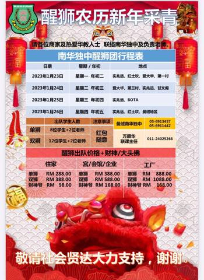
醒狮农历🐰新年🐰采青·玉兔迎春添新象，人逢泰世随兔跃
曼绒南华独中在来临的农历新春佳节期间，出动到 实兆远💮红土坎💮爱大华 第一村💮第三村💮甘文阁 BOTA及曼绒等地区 向厂商与民众采青贺岁，为该校筹募发展基金。 该校醒狮团再添3头新醒狮，在农历新年期间一天可接受约7~8场采青预约，收费从28阅读全文 →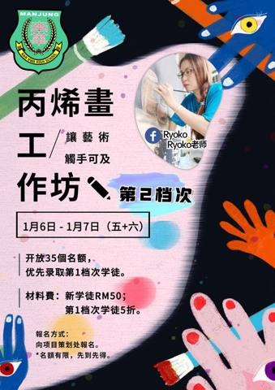
Ryoko Say Hello
～＊丙烯画工作坊 · 第2档次＊～ 你是否因错过丙烯画工作坊而感到惋惜？ 你是否对于上次的亚克力绘画意犹未尽？ 你对Ryoko凉子老师授课内容感到好奇？ 那就捉紧机会，报名参加第2档次的【丙烯画工作坊】 名额：35位（优先录取第1档次学徒）阅读全文 →
南华独中 · 学习成果展 Nan Hwa High School's Learn…
南华独中 · 学习成果展 Nan Hwa High School's Learning Achievement Exhibition ◎展期 Exhibition Date： 1月13日 - 1月15日 · Jan 13rd - Jan 1阅读全文 →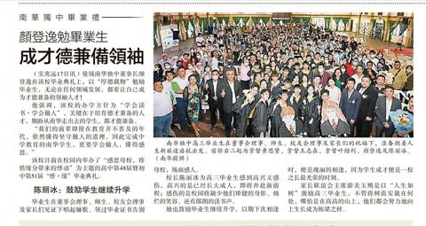
南华独中毕业礼·颜登逸勉毕业生
成才德兼备领袖—— 18-12-2022《星洲日报》阅读全文 →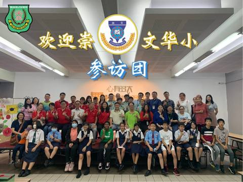
吉隆坡旧吧生路崇文华小·崇文华小参访团
纸上得来终觉浅， 千里相见竟如故。 南华独中姐妹校 “吉隆坡崇文国民型华文小学” 于日前组团拜访参观本校，同行的包括有崇文董事会理事、家协代表、师生与家长们。经过两校简单交流以后，崇文校友兼南华独中本校生随即带领崇文华小学生参访学校硬体设备阅读全文 →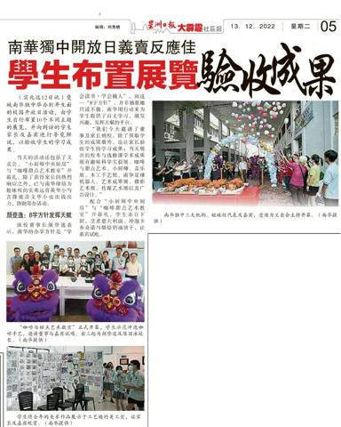
南华独中开放日义卖反应佳
学生布置展览验收成果—— 13-12-2022《星洲日报》阅读全文 →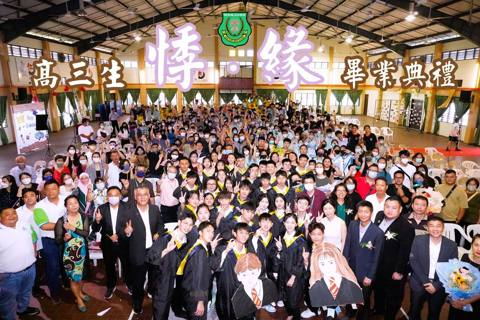
高中第48届 暨·初中第51届毕业典礼 "悸·缘"
南华独中于日前举办高中第48届暨初中第51届毕业典礼，主题为“悸·缘”，意味着“感谢母校恩情，珍惜缘分带来的悸动”。毕业生在全体董事会、师生、家长联谊会、校友会及家长的见证下唱奏骊歌、领过毕业证书、告别母校，场面温馨感人。 南华独中董事长颜阅读全文 →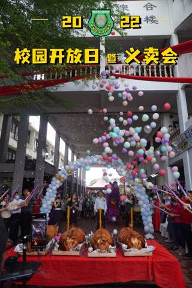
校园开放日暨义卖会
本校南华独中于日前与董事会、家长联谊会及校友会三大机构，联合举办了一场别开生面的校园开放日暨义卖会，反应非常热烈。与本校缔结为姐妹校的育英华小与崇文华小皆出钱出力，助义卖会办得有声有色。 有别于往年，当天也是南华独中的校园开放暨家长日。家长阅读全文 →精彩回顾·2022年 南华独中 校园开放日 暨 义卖会 直播
导览员：黄乙航 高三商 38 Mart 直播阅读全文 →
精彩回顾·“有幸师随 AKA 流年似水”
2022年 南华独中教师节庆典。 By 南华独中校讯社阅读全文 →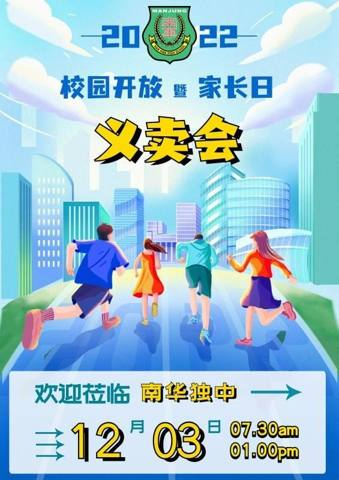
倒数1周 / 7天 / 168小时
校园开放日 走进绿意盎然的南华、漫步校园、参观硬体设备，尽在12月3日（下周六）。 南华义卖会 本地美食、熟食、干粮、甜品、糕点、饮料、咖啡、蔬果、春联、盆栽、多肉植物、生活用品…… 琳琅满目的义卖会商品，等你发掘。 校本与选修课学术成果展阅读全文 →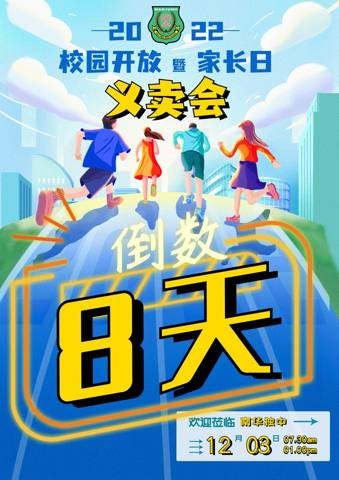
进入个位数倒数
下周六，南华独中校园开放暨义卖会，约定大家，不见不散！阅读全文 →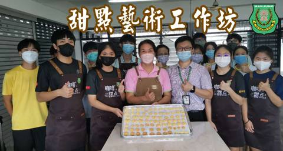
甜点工作坊
烤炉里传出阵阵的奶油香，在孩子的脸上熏染出一抹成就感满满的微笑。 不动手不知道， 起司蛋糕制作并不难。 不动手不知道， 奶油饼干出炉香喷喷。 不动手不知道， 杏仁饼干香脆又可口。 学习烘焙充实自己， 借由手艺传达心意。 参加南华独中工作坊的阅读全文 →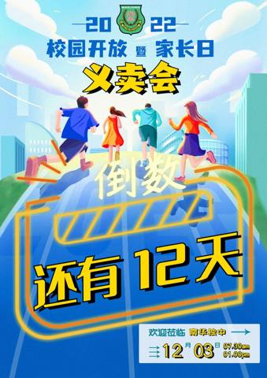
还剩12天，你们准备好了吗
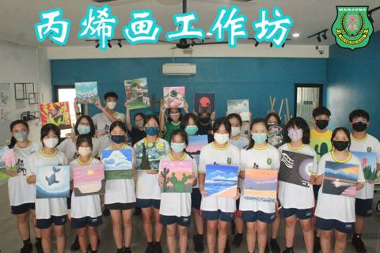
丙烯画工作坊·21位学生；
21幅丙烯画； 21颗艺术家种子，在南华独中的春风沐雨下，逐渐萌芽！ 丙烯油画工作坊，每每学生都交出了最自信、最亮眼、最能代表自己的画作。 想要观赏孩子画作， 请于12月03日（星期六） 亲临南华独中开放日暨义卖会。阅读全文 →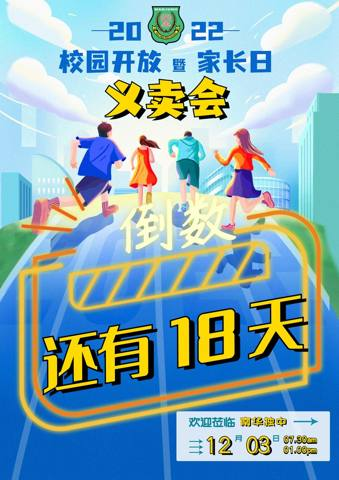
2022年 南华独中 校园开放暨家长日 义卖会
倒 数 ① ⑧ 天阅读全文 →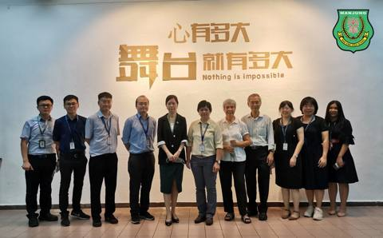
金宝培元独中董事带领行政团队访南华独中
取经探讨校本课程及选修课 金宝培元独中为了有效定制校本课程及探讨选修课的实施，董事胡苏安博士与陆瑞玲博士及刘婉冰校长于日前带领其校行政团队，专访南华独中取经。 南华独中极具特色的初中校本课程开展至今将满一年，高中选修课则已有半年，即将在年底阅读全文 →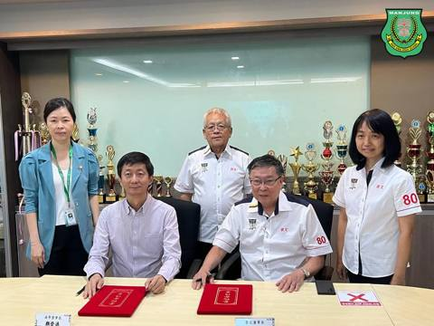
南华独中 与·吉隆坡崇文国民型华文小学
缔结姐妹校 本校南华独中董事会与吉隆坡崇文华小董事会向来保持密切联系，经过长时间的相互考察交流和友好协商，双方同意展开两校间的教育交流与合作。日前两校在双方董事会、校长、家协及师长的见证下，于崇文国民华文小学签署友好协议，缔结为姐妹校。 曼阅读全文 →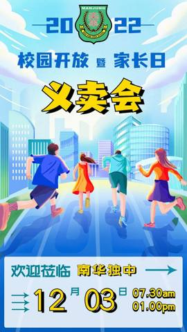
2022年 南华独中·校园开放暨家长日义卖会
日日行，不怕千万里； 时时学，不怕千万卷。 2022年，是疫后艰难的一年，亦是万象复兴的一年。 南华独中特此举办“校园开放暨家长日义卖会”， 诚邀学生家长返校验收孩子学业成绩， 更是诚邀各界莅临见证南华独中学生成果的丰收！ 当日还有举办“义阅读全文 →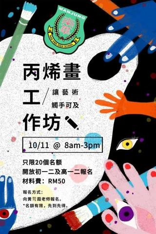
～＊丙烯画工作坊＊～什么
什么？你没听过丙烯？ 没关系，只要我说是压克力Acrylic颜料，此时你肯定会恍然大悟吧！？ 丙烯颜料因为其特性，在风干后迅速失去可溶性，不再溶于水，且不易褪色，持久性较好，一直深受绘画爱好者的喜爱。 透过本次的工作坊，由黄鹙葭美术老师传授阅读全文 →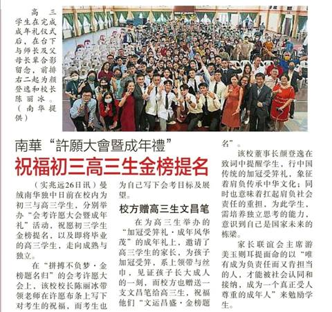
南华“许愿大会暨成年礼”
祝福初三高三生金榜题名—— 27-10-2022《星洲日报》阅读全文 →预告 @ Robotic体验课
你喜欢踢足球吗？ 你喜欢机器人吗？ 还是，你喜欢操纵机器人踢足球！？ “2022年 南华独中 校园开放暨家长日” 日期：12月3日 时间：08.00am - 1300pm 地点：南华独中 即将推出的Robotic体验课， 让你亲身体验： ①阅读全文 →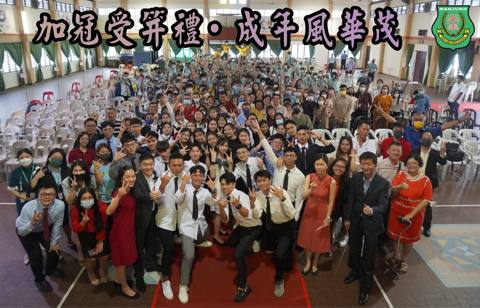
2022年 南华独中·成年礼暨会考许愿大会
日前于南华独中礼堂进行的“成年礼暨会考许愿大会”圆满落幕。 成年礼 南华独中高三的学生成年在即，特此举办以“加冠受笄礼·成年风华茂”为主题的成年礼，邀请高三礼生的家长出席为孩子加冠受笄，系上领带与丝巾，见证孩子长大成人的一刻。 礼生在接受加阅读全文 →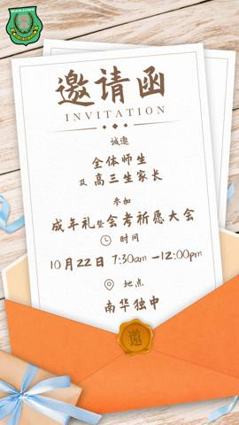
2022年 南华独中 成年礼 暨 会考祈愿大会
中国传统成人礼即指冠礼和笄礼，此传统自西周一直延续到明朝。古时汉族男子行冠礼，即加冠，表示其已成人，被族群承认；女子则是在满行笄礼。 趁着会考将至，本校除了行祈愿大会，祝初三及高三考生“拼搏不负梦，金榜题名归”，同日亦举办成年礼，为高三生行阅读全文 →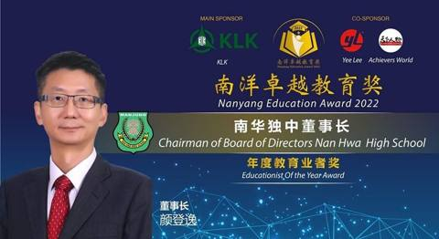
《南洋卓越教育奖》
恭贺本校南华独中及董事长颜登逸先生荣获“杰出教育机构奖”及“年度教育者奖”。 本校时刻秉持“学会读书·学会做人”的办学理念，以达成培养“迎领”21世纪领袖人才的办学愿景。阅读全文 →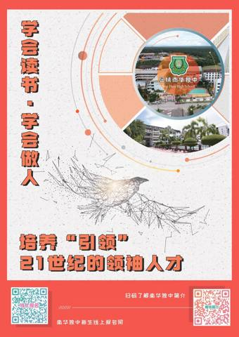
如果你还在为升学感到迷茫；
如果你还在观望并作出最佳选择； 如果你对南华独中感到好奇； 如果有一本手册，可以解答你心中的困惑—— 不妨扫码以了解更多， 或点开以下链接，游览：https://anyflip.com/ovfiq/fznp/阅读全文 →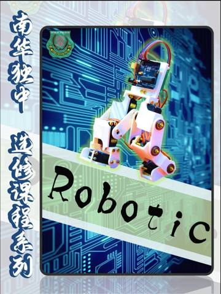
AI Robotic @ 第四堂课 学习实录
万顺华老师 @ 课堂观察笔记： 学生人数：22位 第四课的内容是电容。学生的天赋很好，虽然理论的理解有一定的难度，但来到动手操作的环节，各个都精神奕奕起来了，完全难不倒他们！ 学生透过这堂课明白了电容是一种以电场形式储存能量的电子零件，在需阅读全文 →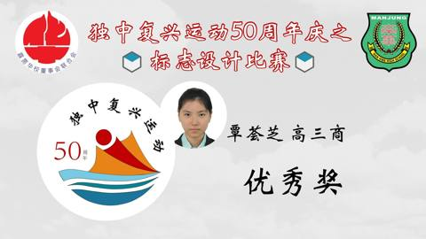
恭贺南华独中 于
独中复兴运动50周年庆 之 标志设计比赛 斩获佳绩 得奖学生如下： 优秀奖： 覃荟芝 高三商 林秀雯 初三忠 安慰奖： 何恩琪 高三商阅读全文 →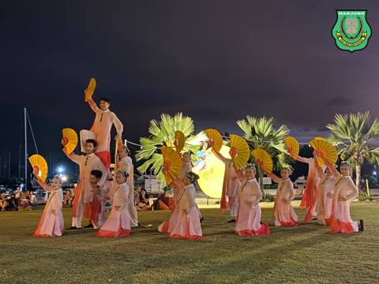
恭贺·南华独中舞蹈团·凭借《神采飞扬》荣获
第32届霹中小学舞蹈观摩晚会 中学组 · 银奖阅读全文 →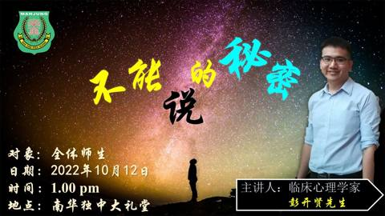
《不能说的秘密》
为了树立全校师生对性教育的正确观念，本校特此邀请临床心理学家彭开贤先生于10月12日（星期三）下午1点在本校大礼堂给予“不能说的秘密”为主题的讲座。 对象：全体师生 日期：2022年10月12日 时间：1.00pm 地点：南华独中大礼堂阅读全文 →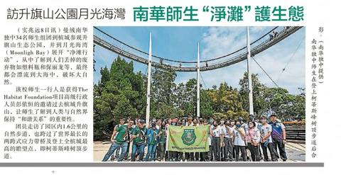
访升旗山公园月光海湾·南华师生“净滩”护生态
——《星洲日报》09-09-2022阅读全文 →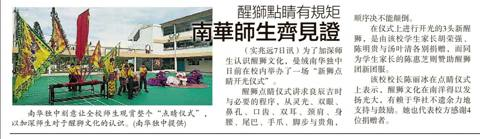
醒狮点睛有规矩·南华师生齐见证
——《星洲日报》08-09-2022阅读全文 →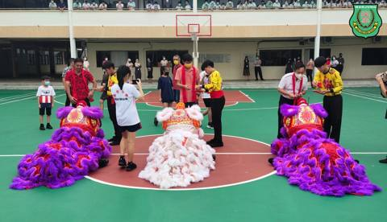
醒狮点睛有规矩·南华师生齐见证
舞狮与其他传统艺术一样也有许多规矩和禁忌，为了让全体师生更加认识醒狮文化，适逢学生家长捐赠三头雄狮予南华独中醒狮团，校方特此安排了一场向全校公开展示的“新狮点睛开光仪式”。 胡荣强先生、陈明贵先生与汤叶清女士各捐赠一头崭新的醒狮予南华独中。阅读全文 →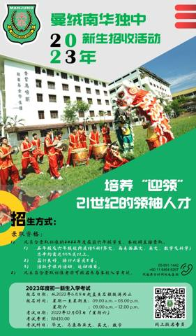
2023年度初一新生招收正式开始
（一） 录取资格： 1) 凡符合录取标准的2022年度在籍六年级学生，本校将直接录取。 2) 凡未符合录取标准者亦可报名参与本校入学考试。 （二） 录取标准： 1) 五年级及六年级校内成绩5科（华文、马来西亚文、英文、数学及科学）总平均需达阅读全文 →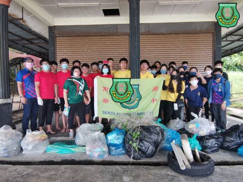
环境教育课程之槟城生态与文化之旅 Day ②
首日参观升旗山生态公园后，师生们对于“维护环境有助于生态平衡”有了更深的认识，于是透过隔日于月光海湾（Moonligh Bay）的“净滩行动“，贯彻环境保护的理念，阻止废弃物流入海洋，为守护马来西亚自然生态出一份力。 第一阶段，学生们分成四阅读全文 →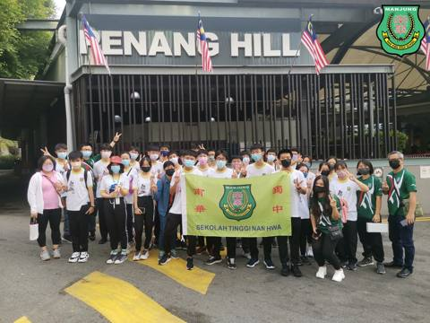
环境教育课程·槟城生态与文化之旅
Day ① 受 The Habitat Foundation 邀请，本校有28位学生与6位老师共赴参观 The Habitat Penang Hill 生态公园。负责解说的包括有高级项目行政人员彭依恒先生以及解说员李凯贤导师。 除了有专业的阅读全文 →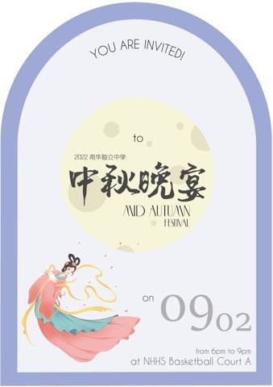
2022年中秋晚宴·花好月圆日，中秋喜相逢
为了欢庆中秋佳节，南华宿舍自治委员会将于02.09.2022（星期五）下午六点于本校A Court 篮球场举办“2022年中秋晚宴”。 丹桂飘香又中秋，花好月圆人长久。 南华独中在此预祝各界中秋节快乐。阅读全文 →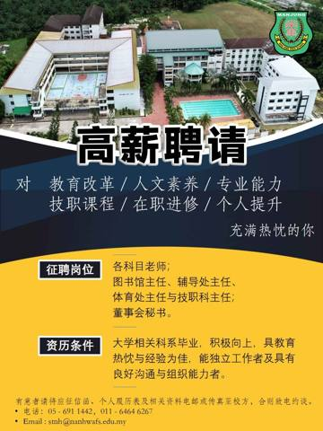
诚邀加入南华独中团队·本校因校务发展，高薪聘请对
教育改革、人文素养、专业能力、 技职课程、在职进修与个人提升充满热忱的你。 征聘岗位如下： 各科目老师； 图书馆主任、辅导处主任、 体育处主任与技职科主任； 董事会秘书。 有意者请将应征信函、个人履历表及 相关资料电邮或传真至校方，合则致电阅读全文 →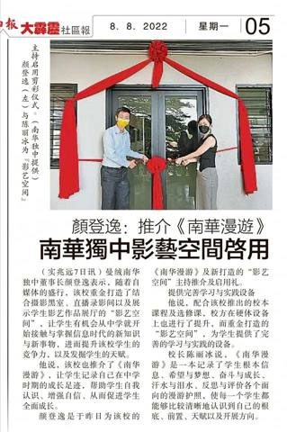
颜登逸：推介《南华漫游》
南华独中影艺空间启用——《星洲日报》08-08-2022阅读全文 →
《南华漫游》推介礼·暨影艺空间启动仪式
今日的南华独中可谓双喜临门—— 一喜是，学生成长纪录《南华漫游》新书推介； 二喜是，南华独中“影艺空间”正式启用。 《南华漫游》是一本学生成长记录，是课程改革所倡导的开放性质性评价的体现，更是学校、教师、学生和家长能够共同参与的成长印记，让阅读全文 →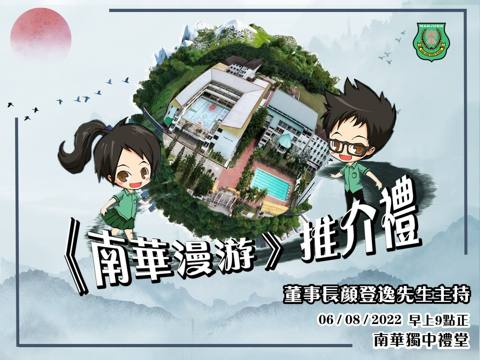
《南华漫游》推介礼·日期：06-08-2022（星期六）
时间：早上九点正 地点：南华独中礼堂 人生或许会无数个六年， 无人能否认中学这六年走来， 一步一脚印都是值得纪念的瞬间。 这是一本供南华独中的学生亲笔记录着自我、志向、成长、反思、联课、奉献、服务与荣耀的手札。漫游南华的六年，沿途风景风光明阅读全文 →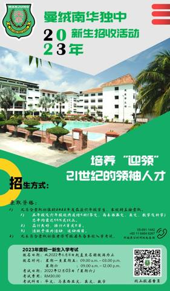
2023年度初一新生招收正式开始
（一） 录取资格： 1) 凡符合录取标准的2022年度在籍六年级学生，本校将直接录取。 2) 凡未符合录取标准者亦可报名参与本校入学考试。 （二） 录取标准： 1) 五年级及六年级校内成绩5科（华文、马来西亚文、英文、数学及科学）总平均需达阅读全文 →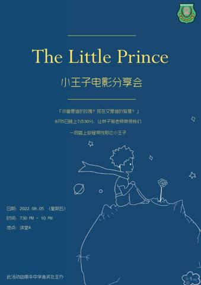
电影分享会 ①·Le Petit Prince 小王子
日期：05-08-2022（星期五） 时间：7.30pm - 10.00pm 地点：南华独中讲堂 A 活动简介： 《小王子》的故事大家想必都耳熟能详，可是飞行员和小王子分离之后，故事接下来会怎么发展呢？小王子之后的旅程是怎样的呢？也许，这部阅读全文 →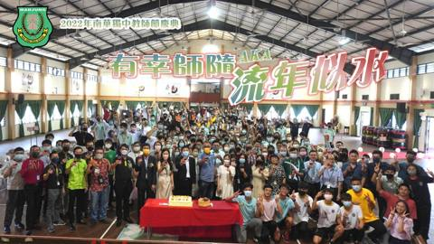
2022年教师节庆典】·由班导师所带领的高三筹委会主办
“有幸师随 AKA 流年似水”于7月23日终于圆满落幕。 疫情下停课不停学；疫情后复课即复办教师节庆典。 高三生有幸的是，能以实体的方式，号召与聚集全校董家教员生，以隆重的庆典向劳苦功高的师长们表达恩情。 【师】 情重教兴风尚， 【恩】 德阅读全文 →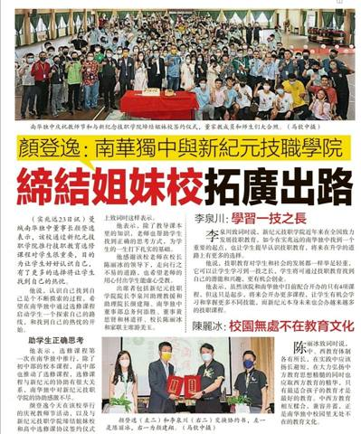
颜登逸：南华独中与新纪元技职学院
缔结姐妹校拓广出路 ——《星洲日报》24-07-2022阅读全文 →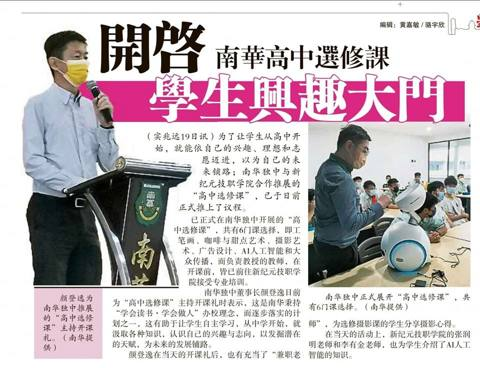
南华高中选修课，开启学生兴趣大门——《星洲日报》20-7-2022
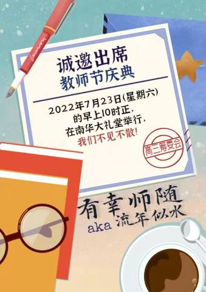
致：受邀嘉宾、董事、家联、校友会、全体教师及学生
为了欢庆教师节，特此订于7月23日（星期六）举办教师节庆典及教师节晚宴，敬请准时出席。 教师节庆典 日期：7月23日（星期六） 时间：早上10点正 地点：南华独中礼堂 主题：有幸师随 AKA 流年似水 教师节晚宴 日期：7月23日（星期六）阅读全文 →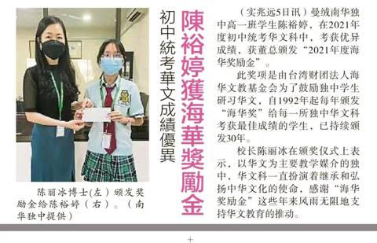
初中统考华文成绩优异 陈裕婷获海华奖励金——《星洲日报》06-07-2022
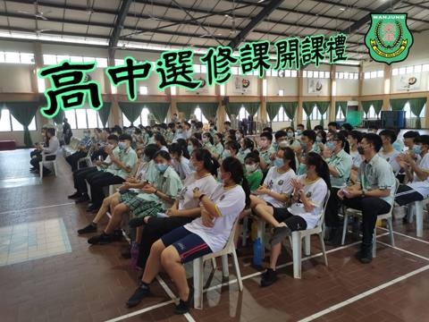
高中选修课 @ 开课礼·南华独中筹划已久的“高中选修课”
于15.07.2022（星期五）终于顺利开课。 现阶段“高中选修课” 开办的课程已达六门课，其中包括有： ①工笔画 ②咖啡与甜点艺术 ③摄影艺术 ④广告设计 ⑤AI人工智能 ⑥大众传播 选修课授课老师在开课前，皆已前往新纪元技职学院接受专业阅读全文 →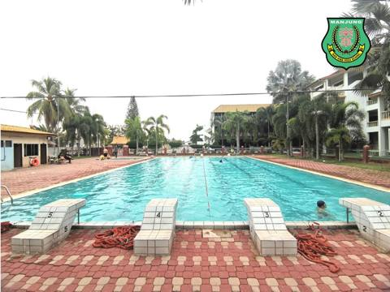
随着教育局于两个月前宣布放宽防疫SOP
学生们最期待的便是游泳池的开放。 除了指定初一体育课必修游泳课， 校方也开放泳池给寄宿生在放学后使用， 以增加宿舍生在课后可选择的运动项目。 孩子们在老师及舍监的监督下， 在湛蓝的泳池里畅游，划出一圈圈满溢着欢愉的涟漪。阅读全文 →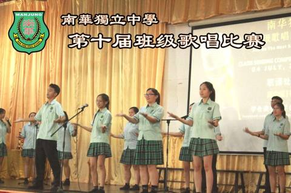
“疫“去“艺”来
！“声”而不凡！“音”你精彩！ 南华独中第十届班级歌唱比赛 于04.07.2022（星期一）圆满落幕！ 一首首耳熟能详的校园歌曲， 一幕幕感人热泪的众人合唱！ 久违的青春活力歌声，充盈本校礼堂， 各班级学生酣畅淋漓地唱出心中的梦想。 经过一阅读全文 →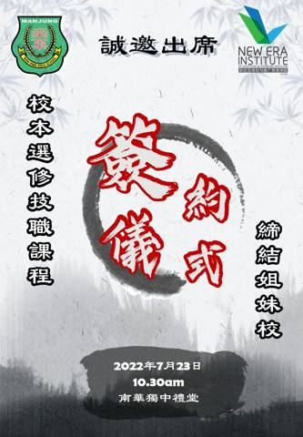
南华独中与新纪元技职学院
技职领域，友好协作 缔结两校良缘，延续两校情谊。 谨定于7月23日（星期六） 早上10点30分，于南华独中礼堂进行 “”校本选修课技职课程”与“缔结姐妹校”签约仪式。阅读全文 →曼绒南华独中·董家教员生致贺
本校董事长颜登逸先生当选隆雪华堂会长 —— 才德兼备 · 众望所归 ——阅读全文 →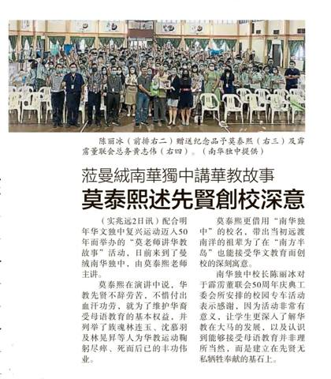
莅曼绒南华独中讲华教故事
莫泰熙述先贤创校深意——《星洲日报》03-07-2022阅读全文 →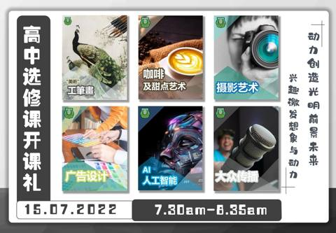
高中选修课开课礼·为了提供学生课外平台，学习新技艺
从而为南华学生增值及提高竞争优势， 本校“高中选修课”于 15-07-2022（星期五） 早上7点半正式开课！ 届时由董事长颜登逸先生主持开课礼， 让南华独中的孩子们，能在兴趣中快乐学习， 激发想象与动力，创造光明前景未来。阅读全文 →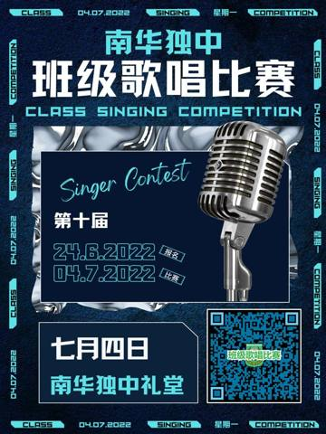
第十届班级歌唱比赛·“疫“去“艺”来
“声”而不凡 “音”你精彩 久违的校园歌声， 将与你我重逢！ 南华独中第十届班级歌唱比赛 将于7月4日（星期一）早上7点30分 于本校大礼堂拉开帷幕。 期待同学们在热情如火的青春里，一同酣畅淋漓地唱出心中的梦想！让我们的歌声在校园起舞，让我阅读全文 →莫老师讲华教故事·为了配合独中复兴运动50周年庆
校园专车活动（一）：“莫老师讲华教故事” 本校曼绒南华独立中学 全体师生齐聚在礼堂， 聚精会神地聆听莫泰熙老师分享华教故事。 在莫老师绘声绘色地演说下，大家仿佛搭上专车，身历其境地穿梭在先贤为华教运动的历史隧道中，回顾华文教育在马来西亚办学阅读全文 →敬致：社会贤达 / 商家宝号
征求乐捐印刷费/赞助刊登宝号广告 为了纪念高三生的的学习生涯，本校高三生拟出版毕业刊。由于经费不足，还望各位多多支持，乐捐印刷费/赞助刊登宝号广告，希冀各位能献出爱心，促成2022年毕业刊出版心愿。 现拟征求家长、商家及热心人士刊登广告以赞阅读全文 →让兴趣变一技之长
南华开办高中选修课——《星洲日报》20-06-2022阅读全文 →2023年度初一新生招收正式开始
（一） 录取资格： 1) 凡符合录取标准的2022年度在籍六年级学生，本校将直接录取。 2) 凡未符合录取标准者亦可报名参与本校入学考试。 （二） 录取标准： 1) 五年级及六年级校内成绩5科（华文、马来西亚文、英文、数学及科学）总平均需达阅读全文 →高中选修课招生日
「兴趣是最好的老师。」——伟大科学家爱因斯坦。 本校为即将开展的“高中选修课”举办招生日，特此邀请新纪元技职与推广教育学院李英伦主任、曽伟勤主任及本校选修课老师为高中的学生介绍选修课课程内容。 此次共开设六门选修课供高中生选择，分别有：咖啡阅读全文 →隆新生文化书坊
捐南华独中657书——《星洲日报》12-06-2022阅读全文 →南华独中办共识营
探讨三机构办学理念——《星洲日报》11-06-2022阅读全文 →吉隆坡新生文化书坊·赠书予南华独中图书馆
诚挚感谢 吉隆坡新生文化书坊经理 林长庆先生 亲临本校赠送各类书籍657本以丰富图书馆藏书。 一书一世界，一卷一洞天。 书香熏陶着孩子光明的未来， 阅读照明了学生卓越的前景。阅读全文 →南华独中共识营·Nan Hwa Consensus Camp
为期三天的“2022年 南华独中共识营” 于05-06-2022圆满落幕，出席者包括董事长颜登逸先生、总务何添胜、副总务林道祥、家联主席游美玉女士、校长陳麗冰博士、全体老师及受邀校友。 今次共识营宗旨为认识自己、高效团队管理及透彻理解与贯彻阅读全文 →马大工程师83捐1万
资助南华独中9清寒生——《星洲日报》04-06-2022阅读全文 →董事邱清妮·捐南华独中乐器——《星洲日报》04-06-2022
南华独中防火演习
5消防员指导防灾——《星洲日报》31-05-2022阅读全文 →5月25日·10点10分
科技与工艺楼 多用途学生餐厅 登逸多元活动中心正式开幕 良辰美景好时光寓意着十全十美 逐步提升的硬体设备及多元化的学科 只为献给南华独中孩子们更理想的学习环境。 孩子们，祝愿你们善用校园各个角落， 踏上寻梦的跳板，奔赴更高更明亮的未来阅读全文 →曼绒南华独中运动会
董家教与师生同场竞技——《星洲日报》26-05-2022阅读全文 →摄影 AI 机械人 艺术课程
南华独中设额外学科 ——《星洲日报》26-05-2022阅读全文 →南华独中 消防演习·为了增强教职员及学生的安全防火意识的
本校邀请实兆远消防局到校给予消防演习及介绍火灾的处理流程。 除了示范灭火器的使用方式， 另外也集合寄宿生宣导火灾发生时的逃生技巧。 亲切的消防员们开放让学生参观消防车的各式功能， 让本校学生一探消防车内部的神秘面纱， 为此学生们对消防员这一阅读全文 →高薪聘请·欢迎有意者联系本校
送23华小蛋糕贺教师节
南华独中生感恩母校栽培——《星洲日报》18-05-2022阅读全文 →南华独中运动会 以蓬勃朝气驱散疫情阴霾
本校第21届运动会于14-05-2022（星期六）顺利圆满落幕。 董事会、家长联谊会及校友会三机构皆派代表出席，见证运动健儿以朝气蓬勃的运动魄力，一扫被两年之久疫情阴霾所笼罩的校园。 除了常规运动比赛项目，现场还设有董家教4X100米接力赛阅读全文 →南华访新纪元技职学院
探讨缔造合作方向 —— 《星洲日报》16-05-2022阅读全文 →参加新纪元科技教学培训
南华独中6老师学编程——《星洲日报》15-05-2022阅读全文 →莅访新纪元技职学院共商建教合作
疫情催化了教育革新的思维，加快了教学改革的步伐，学生仅是考取良好的成绩、取得优异的学术表现、不再满足就业市场的需求。 本校为了深化“校本课程”的范畴与课纲设计，于07-05-2022（星期三）特此拜访新纪元技职学院，借鉴及引进该院丰富多元的阅读全文 →南华独中送蛋糕予华小贺华小教师节
教诲如春风，师恩似海深， 桃李满天下，春晖遍四方。 十年树木，百年树人。 感恩华小教师在栽培教育华人子弟的路上不遗余力。 华小的老师们，您们辛苦了！阅读全文 →出席新纪元大学机器人科技专业培训课程
Professional Training of Robotics Technology 南华独中为了 开课在即的“编程校本课程”， 派了六位老师出席5月5日至7日， 为期三天的“机器人科技专业培训课程”。 感谢新纪元大学科学与科技学院的倾阅读全文 →一书一世界，让书香飘扬·五月份书单出炉了
南华开学礼动人一幕
校董坐轮椅迎新生——《星洲日报·全国版》06-05-2022 手机阅读版：shorturl.at/jpBH0阅读全文 →曼绒南华独中
开学典礼迎54新生——《星洲日报》30-04-2022阅读全文 →配合「鱼菜共生」计划
新纪元技职学院专家访南华——《星洲日报》30-04-2022阅读全文 →新纪元技职与推广教育学院
MySeedsBank 访校交流 MySeedsBank 首席执行官兼新纪元技职与推广教育学院院长 李泉氚 助理教授。 MySeedsBank 团队顾问拿督颜宝隆太平局绅教授、 首席战略官温玮鸿教授、 首席营运官范嘉俊教授。 于 25.04阅读全文 →
2022 年 4 月校园动态

2022 年 4 月校园动态

2022 年 4 月校园动态
参访拉曼大学艺术和社会科学学院
[UTAR] Visit to The Faculty of Art & Social Science 南华独中为了筹划2022年下学期高中选修课程，并开发多媒体制作相关课程，于20-04-2022（星期三）特此拜访拉曼大学科技及创新组主任阅读全文 →开学典 礼·2022年南华独中开学典礼于今日顺利举行
初一新生神采奕奕、精神焕发地出席开学典礼，在董事会、家长联谊会、校方的见证下，领过学号，成为南华一份子。 今日你以南华为荣， 明日南华以你为傲！ 除了颁布新生学号、新生代表致辞的流程以外，校方也安排了精彩的学会团体表演、统考优异生致辞、杰出阅读全文 →校本课程 @ 第一堂木工课
南华独中校本课程 之 木工课” 今日正式开展。 木工课授课老师，有幸请来了经验丰富、手艺精湛的华小退休校长韦远近先生，为孩子传授工艺技术。孩子们眼中掩饰不住蠢蠢欲试的眼神，迫不及待想亲身体验木工的乐趣。阅读全文 →整洁校园 · 安心上课
由训导处主办的”2022年 南华独中 班级整洁比赛“ 二月份成绩出炉： 冠军：高三理 亚军：初三忠 季军：高三商 整洁卫生的上课环境，是孩子能够全心投入在学习中的重要因素之一，尤其在新冠疫情过渡至地方性流行病的这个阶段，培养孩子维持环境及自阅读全文 →一书一世界，让书香飘扬
柔和的晨曦，清新的空气，伴随着郎朗书声，萦绕于孩子们的耳际。 本校借由每日专注力最集中的晨读时间，让孩子们聆听有声书，遍阅世界经典文学名著，增广见闻，陶冶文学素养。阅读全文 →清明节
又称为踏青节，在仲春与暮春之交，是中华传统节日之一，也是重要的祭祖和扫墓的日子。 扫墓祭祀、缅怀祖先，不仅能借此弘扬孝道亲情、唤醒家族共同记忆，亦能凝聚家人感情。阅读全文 →退休科学老师 杰出校友
携手提升南华独中科学室——《星洲日报》04.04.2022阅读全文 →行远思恩 · 情馈母校·本校南华独中结合校本课程的开展
培养理科专业人才，正积极计划全面提升科学实验室。 特此邀请退休科学老师李振源博士及毕业于清华大学化学工程系的杰出校友张毅俊返回母校，携手提出提升硬体设备及优化科学实验的建议。阅读全文 →新学年，新气象
南华独中开学典礼定于 4月23日（星期六）早上8.00点进行， 就让我们以朝气蓬勃的步伐， 踏进充满期待又熟悉的校园， 引颈期盼、迎接“开学典礼”的到来！阅读全文 →曼绒南华独中董事会
颜登逸蝉联董事长——《星洲日报》31.03.2022阅读全文 →南华独中推专题联课
重现130前动画技术——《星洲日报》28.03.2022阅读全文 →专题联课@崭新模式·重现 130 年前动画技术
本校总结检讨近两年来的线上联课活动后，推出崭新的“专题联课”单元，一改过往以学会团体为个别单位的线上网课，换成全校师生齐看美术老师的现场直播，手把手教会重现130年前的“费纳奇镜动画制作”技术。阅读全文 →整体表现超越往年
曼绒南华独中及格率93% ——《星洲日报》25.03.2022阅读全文 →联课专题：费纳奇镜Phenakistoscope
130年前的动画Gif！？那是什么概念？ 无声电影的雏形、 动画片的鼻祖、 连环图的再创造！这就是古人的智慧。 疫情下非一般的联课活动， 全校300人同时连线，趣味教与学。 让本校美术老师黄鹙霞，手把手带领大家重现这门古老技艺，在家上网课也阅读全文 →初中统考成绩表现超越往年
曼绒南华独中92.63%及格率 在刚放榜的2021年度第47届全国独中统一考试中，本校初中考生考获92.63%的总及格率，整体表现超越往年，获得让人可喜的进步。 在优异考生方面，初中考生林美萁考获5A，颜彣城考获4A，林洁熙考获3A。 初中阅读全文 →春分之日
太阳光不偏不倚地直射在赤道上。节气至春分，昼夜平均的背后是阴阳调和，万物仿佛呼应着中正平和的人间秩序。春分如音律之和谐，一切都是刚刚好。 南华独中顺祝大家， 如春分般恰到好处的平安。阅读全文 →于二月杪举办的“环球探险小尖兵”已圆满结束
疫情期间，为了让学生能够体验到与众不同的课程，本校成功把自主学习、周游列国、趣味探险、探索科学、走进自然等众多元素的“环球探险生活营”移至线上进行。 为期三天的活动，共获得来自28所学校，70位探险小尖兵报名参加。 校长陳麗冰博士表示，主办阅读全文 →新纪元电脑科学与科技学院
院长 庄正伟助理教授、系主任兼讲师 萧维深先生、助理讲师 刘腾宇先生 及 执行员 何燕妮小姐 于14.03.2022（星期一）拜访本校，进行“校本课程 · 编程技术”指导与交流。阅读全文 →恭喜本校学生 初三忠 池凯萱
获得由永春美山林氏家族会主办的第一届全国中学生华文征文比赛 初中组 优秀奖阅读全文 →“环球探险小尖兵”倒数四天
一场集“自主学习、周游列国、趣味探险、探索科学、走进自然”等元素的线上探险队即将出发！为了要给孩子们一场难忘的旅行，让孩子化身成为探险实习生，一起环球探索，亲身亲历跨学科、跨领域、开阔视野的冒险！ 今天在本校董事长、校长、老师、助理及学生们阅读全文 →致：全体老师及学生
“2021学年结业礼”仪式定于25.02.2022（星期五）8am至10am，在本校礼堂进行。 为了遵守SOP，本次结业礼将会以年级分批进行，流程表及进行方式，请扫二维码以了解更多。阅读全文 →恭喜 🔥 2022年·挥春比赛得奖者
挥春赛题： 初中组：春辉满学府；欢笑溢南华。 高中组：新年捷报虎添翼；风拂朝阳马奋蹄。 教职员组：虎啸翠山千里锦；风拂绿柳万家春。阅读全文 →南华独中预祝各界，元宵节快乐
法国驻马大使馆，教育处主任 Anaïs DESCHAMPS
及其法语推广团队，于11.02.2022（星期五）拜访本校，进行交流。阅读全文 →恭喜 🔥 2022年·新春班级布置比赛得奖班级
祝愿大家，在美轮美奂的班级中， 学业进步！突飞猛进！如虎添翼！阅读全文 →在疫情笼罩下·本校联课活动停而不止
改以线上形式进行，坚持贯彻五育 “德智体群美” 让好动活泼的👨👨👧👧孩子们 不受疫情阻扰，发展身心的全面健康！ 孩子们，约定你们了， 星期六🤙，空中不见不散！阅读全文 →恭喜 🔥 2022年·新春剪纸比赛得奖者们
胜不骄，败不馁！ 祝得奖者们继续精进自己的技术； 祝其他同学们明年发奋卷土重来！阅读全文 →教育领域的改革·时时刻刻都在进行中
本校南华独中与时并进， 为此即将推出初中校本课程， 内容包括有五大领域、 十八门新课程—— 透过🤩趣味化🤩的教学设计， 激发👨👨👧👧孩子们👨👨👧👧的学习兴趣， 以达到孩子们能够自主学习、 自发探求知识、积极开发自我潜能的效果。 阅读全文 →黄府黄天发老先生往生寿终正寝
黄府居丧不忘华教，捐我校节约帛金 5 万。黄府仁风义举惠及萃萃学子。 本校全体同仁致上万二分谢意。阅读全文 →立春
是干支历二十四节气中的第一个节气，又名岁首、立春节、正月节。干支纪年法，以立春为岁首，交节日为月首。 相传有一民俗游戏，是人们将鸡蛋手扶在平面久立后，尝试松手后让蛋不倒，有俗谚为：“春分到，蛋儿俏。” 今日，你立春了吗？阅读全文 →曼绒南华独立中学·全体董教职员生同敬贺
春辉满学府，欢笑溢南华 虎岁报佳音，八方盈正气阅读全文 →醒狮团
于最后一天的上课日（28.01.2022）出动四头狮舞动全校。 敲锣打鼓声响彻校园各个角落， 四狮舞遍了各个办公室及班级， 采下悬挂高处的“青”， 象征着新的一年大吉大利，顺顺心心。 即使董事、教职员和学生戴着口罩， 仍难掩脸上浮现的笑意。阅读全文 →南华独中恭祝各界·2022年 福虎添翼，虎虎生威
情系南华 、感恩有您！阅读全文 →
2022年 新春晚宴 😁精彩回顾
华乐团《金蛇狂舞》阅读全文 →
2022年 新春晚宴 😁精彩回顾
舞蹈团 与 宿舍新生 共舞阅读全文 →由联课处主办、华文组与美术组协办
“壬寅年 挥春比赛” 于 28.01.2022（星期五） 在 本校 A Court 篮球场顺利进行。 挥春赛题： 初中组：春辉满学府；欢笑溢南华。 高中组：新年捷报虎添翼；风拂朝阳马奋蹄。 教职员组：虎啸翠山千里锦；风拂绿柳万家春。 现场请阅读全文 →27.01.2022（星期四）
由南华宿舍自治会主办“2022年 南华独中新春晚会” 顺利圆满落幕。 感谢各位出席的嘉宾、家长及学生们，若有招呼不周到之处，敬请谅解。 同时也感谢在短时间内完成策划、筹备及布置现场的宿舍自治会，你们辛苦了！ 新的一年，新的开始，就让我们吸收阅读全文 →曼绒南华独立中学与福清育英华小于27.01.2022（星期四）缔结为姐妹校
两校董事长签订合作备忘录，展开多元面和多层次的合作，携手并进，为实兆远曼绒县的华文教育掀开新篇章。阅读全文 →一元复始，万象更新
本校特此举办“壬寅年挥春比赛”及“新春大团拜”，为校园注入活力满满的春节气息。 南华独中在此提前向各界拜年，恭贺新禧！万事如意！阅读全文 →为了充实孩子们的假期生活，让孩子体验难忘的旅行
曼绒南华独立中学特此主办【环球探险小尖兵】跨学科知识线上生活营，敬请各校鼓励贵校六年级及初一学生积极参与此意义非凡的活动，距离报名截止还有一个月，欢迎各校再次提醒师生关注。 详情请扫描海报二维码，或致电热线 011-61616267。 线上阅读全文 →“中华剪纸”是流传至今的著名民间艺术之一，更是营造春节气氛的不二功臣
上至炎黄帝君，下至寻常百姓家，无不喜爱剪纸艺术。 为了让师生提前欢庆新春佳节，感受新春喜庆，曼绒南华独中联课处特此筹办“2022年新春剪纸比赛”诚邀全校师生共襄盛举，一同传承春节习俗文化。阅读全文 →
南华独中感谢文友会的全体同仁，书法家吴启强的配合，让这次的 “虎虎生威” 义务挥春，圆满
一副春联，传承的是传统文化，传递的是美好祝福。今早书法家吴起强及学员现场挥春，群众纷纷前来“接福”。 大家为进一步弘扬传统文化精神，增添节日喜庆气氛，财神爷和吉祥卡通人物也齐来丰富群众精神文化生活，展示新时代风采，实践所联办活动的笔墨凝书香阅读全文 →